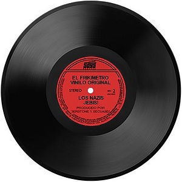

DJ
 De: La Frikipedia, la enciclopedia extremadamente seria.
De: La Frikipedia, la enciclopedia extremadamente seria.
De la serie grandes personajes:
DJ Cemento: Mezclando en vivo
| Nacimiento
|
3075 ( ya sabia yo que no eran de esta época)
|
| Muerte
|
cercana, lejana no lose todo esta confuso
|
| Ocupación
|
Dj
|
| Nacionalidad
|
Una mezcla de holndés con inglés y alemán
|
| Malo o bueno
|
2, 3, 4...
|
| Atentados contra la humanidad
|
fastidiarte el ligue con musica de sicos de vinilo rayados
|
| Religión
|
diyeisismo
|
| Notas
|
Se rumorea que está medio loco
|
Son esos extraños seres que se ven al fondo de todas las discoteca, a veces llevan unos cascos puestos y se ponen a mover el cuello de arriba a abajo.
 Un CD negro. "
Woah! Increible"
DISC viene de disco, como buenamente se entiende y JOCKEY viene al parecer de esos tipos que montan a caballo para hacer las carreras esas en las que hacen apuestas los mafiosos y todos esos tipos que salen en las pelis.
Todo esto es debido a que ellos son los que se encargan de hacer que los discos que pinchan "cabalguen" entre ellos, es decir, emparejar los golpes o "picos" de las canciones para escuchar un buen ebganche o cambio de tema. Como pocas veces cuadran bien las velocidades de los temas al mezclarlos en lugar de sonar el tipico "BUM BUM BUM" de las discotecas suena a veces el también típico "PUTRÚM PUTRÚM PUTRÚM" mientras ellos mezclan, características de las discotecas en las que esta pinchando el tipico "dj recien empiezo", facil de reconocer por la cara de estupido que pone cuando un enganche sale bien (eso rara vez sucede) y porque se la pasa toda la noche saludando a gente que no conoce para demostrar que es top o mas que eso "TETOP" (léase teto medina).
Tipos de Dj
- El profesional: llega temprano a trababajar para poder conectar sus equipos (que siempre son de muy buenas marcas que no vamos a nombrar por temas de que no vienen a caso (promocionar)) y se toman el trabajo de analizar los equipos de sonido para ecualizar y realizar una gran perfomance fiesteril esa noche trabajando de manera profesional y ordenada... la verdad es que estudios cientificos llevados a cabo por Alfy Doraemon demostraron que nadie cree que este tipo de dj exista.
- El drogata: llega a ultimo momento (todos los que a continuacion nombraremos llegan a ultimo momento) acompañados de el dealer o amigo (ellos le dicen amigo) y arman sus trastos como pueden pasando musica que solo estando volado como ellos se puede disfrutar, con enganches inexistentes, pupilas dilatadas, saltos freneticos tirando vasos de hagua, alcohol, cerveza y otros liquidos destructores de dispositivos electronicos que hacen que lo que haga sea emitir sonidos mas que musica.
- El mamado: es reconocible porque llega con una vestimenta impecable, con sus equipos raqueados y arma su arsenal sonidistico muy bien. Ahora... pasada la media hora del inicio de la fiesta, el susodicho ya esta tanto o mas borracho que toda la concurrencia de la discoteca. Sus enganches tambien son inexistentes (aunque ellos crean que estan a la altura de Dj Tiesto). Estos Dj´s también tienen en sus cabinas vasos de variados tipos de alcohol pero ¡ATENCION! solo son vasos vacios que ya se engulleron para ponerse en ese estado.
- El top: buenos equipos, bueno vestimenta, buena musica, enganches medianamente aceptables, reconocido por toda la manada de pijos que lo siguen y lo saludan toda la noche. Se diria que es un tipo de Dj aceptable de contratar si no fuera porque es insoportablemente PIJO. Sus aires son los de una diva total y nunca, pero nunca lo vas a ver sin sus lentes de marca. Se piensa que los usan para protegerse de los feos, gordas, canis y tambien los emos (ellos no vienen al caso porque no salen a las discotecas porque prefieren quedarse a cortarse con una cuchara pero no queria dejarlos afuera).
- El Dj cani: si, craselo o no, existen. Son especimenes no muy raros que se dedican a poner musica en discotecas canis pasando musica reggaeton genrlamente. Son idolatrados por las Jennys y en algunos casos por canis machos que perdieron su ultima neurona invalida escuchando esa mierda de musica. Si bien no existen muchos es una raza que debe ser exterminada como sus receptores de musica. No son para nada responsables, se maman, se fuman y aspiran hasta la tierra de los zapatos de Michael Jordan sin importarles un carajo la pseudo fiesta que van a hacer (es asi porque como los canis no entienden de musica cualquier sonido emitido por cualquier cosa los pone a realizar su ritual de apareamiento.
Autor(es):
- Krusher
- Nexo
- Doctor grijander
- MURO DE AGUAS (2)
- Bazuke
- Khazike Khashondo
- Azulejos
- Frikih
- ANorMaliTa
- ArnauLópezDJ
Frikipedia 2005-2016, Licencia
GFDL 1.2 - Extraído por FrikiLeaks